Estudiante activo de 8° semestre de Diseño y Animación Digital con experiencia en estrategia para redes sociales, así como en el diseño integral de marcas, desde su conceptualización hasta su aplicación en distintos medios. Me caracterizo por una actitud positiva, proactividad y mentalidad de crecimiento, disfrutando el trabajo en equipo y la creación de soluciones innovadoras.
MI TRABAJO
A lo largo de mi trayectoria he trabajado en la producción y edición de contenido para redes sociales, así como en el diseño integral de marcas, desde su conceptualización hasta su aplicación en distintos medios. He participado en proyectos de branding, desarrollo de imagen corporativa y creación de elementos visuales estratégicos, fortaleciendo mi capacidad para comunicar ideas de manera clara y atractiva.
ACADÉMICAMENTE
Mi formación combina una base analítica con estudios en Diseño y Animación Digital, complementados con una certificación en Diseño UX de Google, lo que me permite crear soluciones visuales creativas y centradas en el usuario.
FORTALEZAS
A lo largo de mi desarrollo profesional he fortalecido habilidades clave como el trabajo en equipo, la comunicación efectiva y la resolución creativa de problemas, participando en distintos proyectos donde la organización y la colaboración han sido fundamentales.
Presento una selección de mis trabajos en modelado y animación 3D, donde exploro la creación de personajes, objetos y entornos digitales. A través de estos proyectos, desarrollo desde la conceptualización hasta la animación final, integrando técnicas de modelado, texturizado e iluminación para construir piezas visuales dinámicas que reflejan mi crecimiento técnico y creativo.
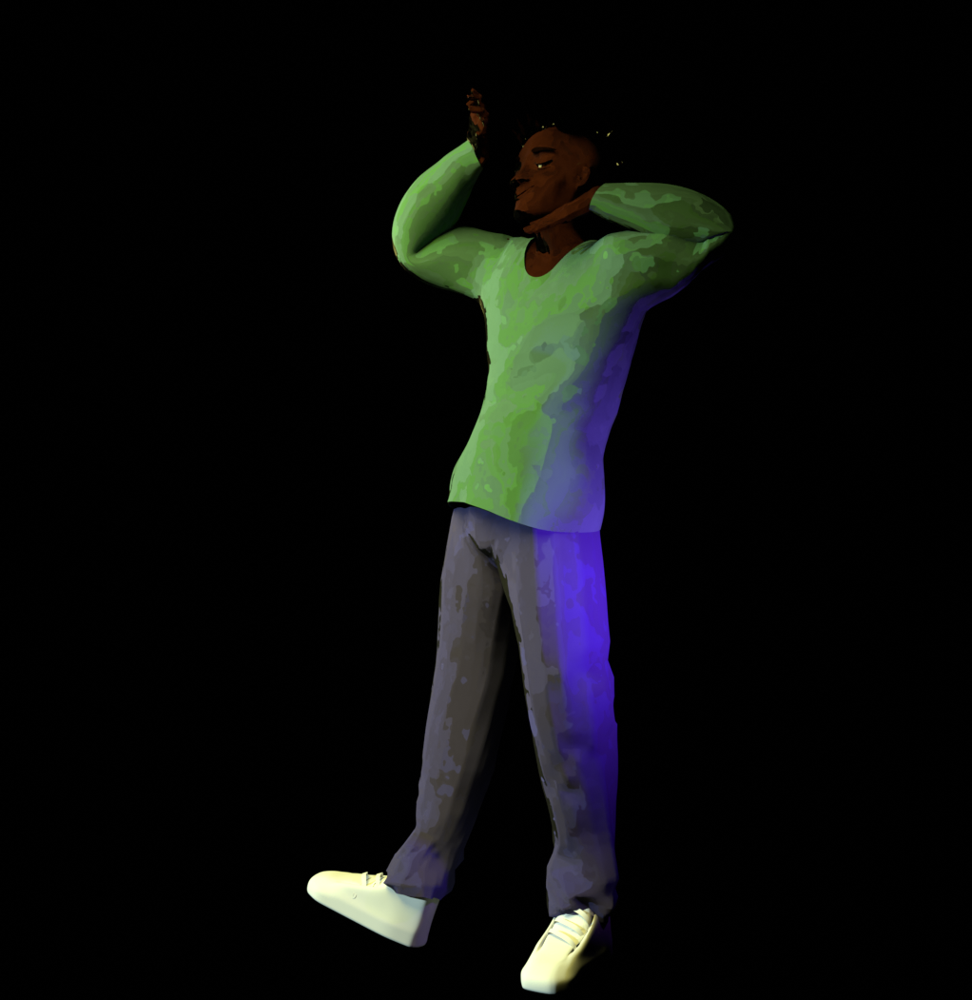
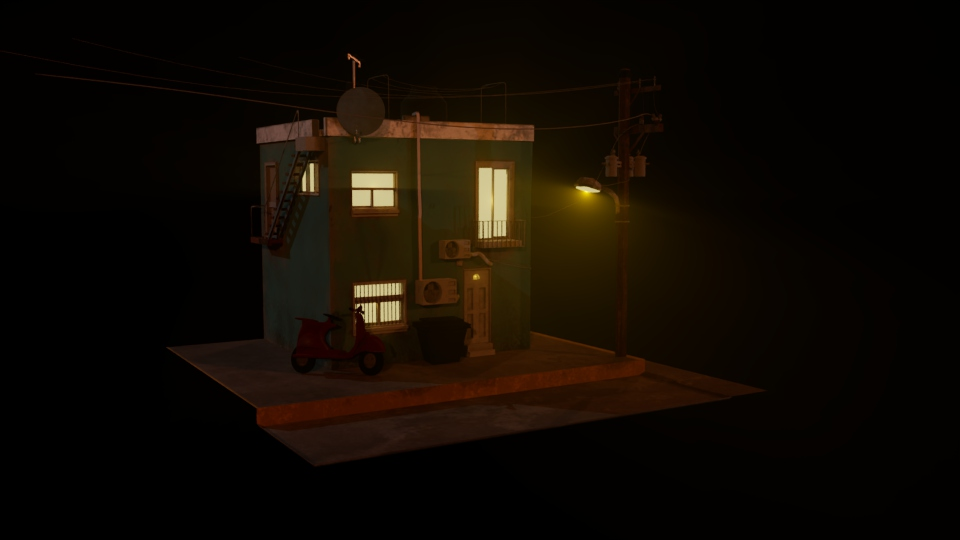
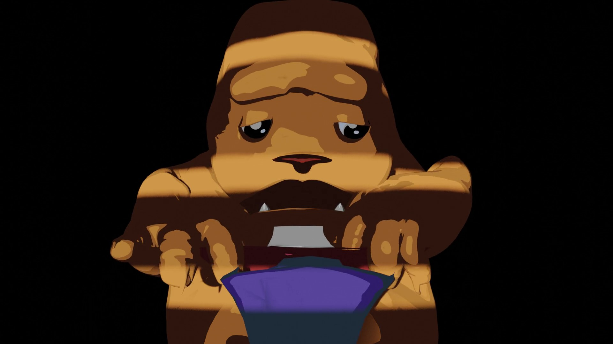
En esta sección presento mis trabajos de worldbuilding y narrativa, donde desarrollo universos conceptuales con identidad, historia y coherencia interna. A través de la creación de personajes, culturas y contextos, exploro la construcción de historias que conectan emocionalmente y dan profundidad a cada proyecto, combinando creatividad y estructura para generar experiencias narrativas sólidas y memorables.
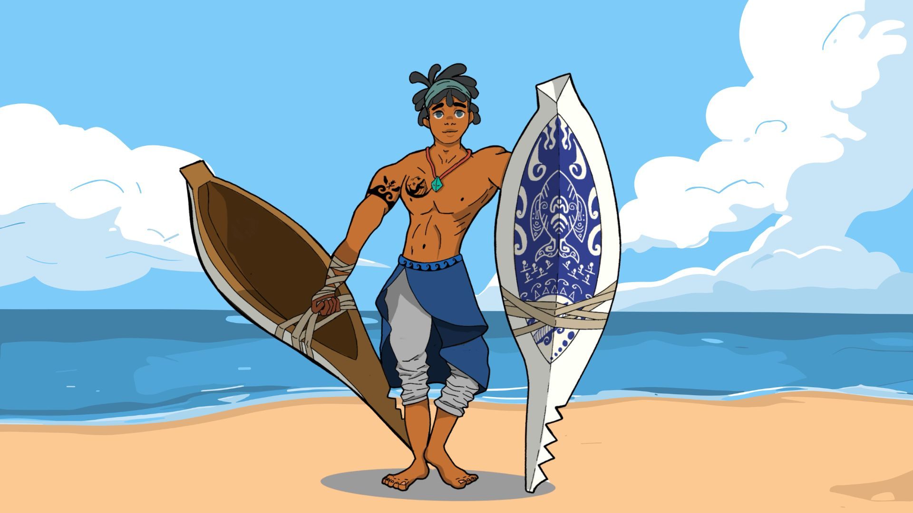
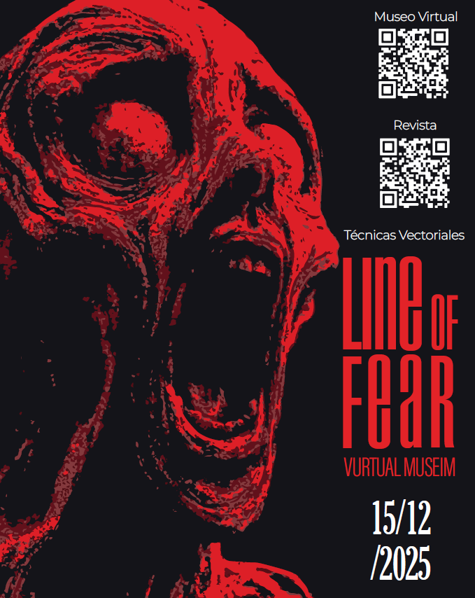
En esta sección presento mis trabajos en branding y diseño, donde desarrollo identidades visuales estratégicas que comunican la esencia de cada marca. A través de la conceptualización, creación de lineamientos gráficos y aplicaciones en distintos medios, busco construir propuestas coherentes, funcionales y memorables, combinando creatividad y enfoque estratégico para generar un impacto visual efectivo.
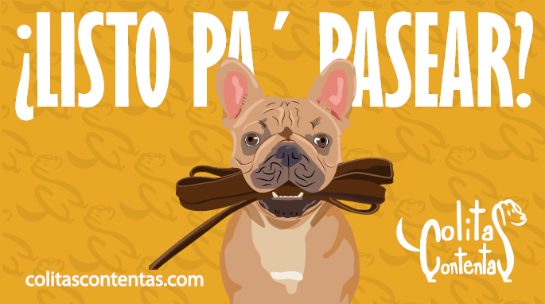
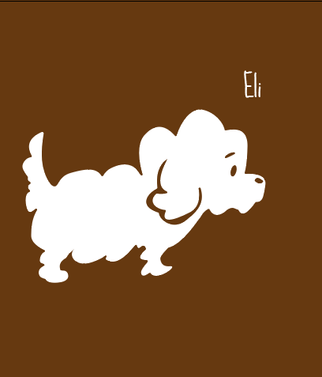
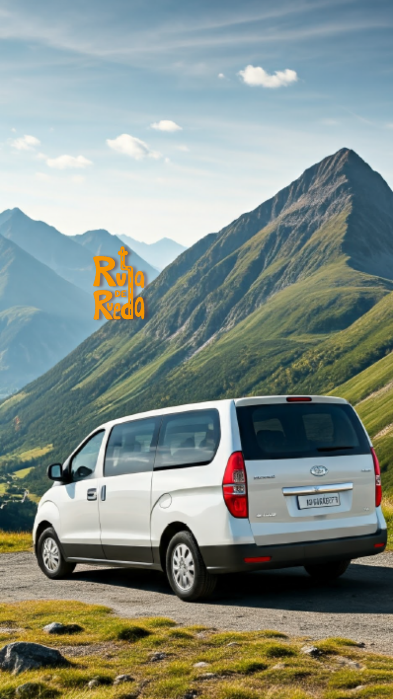
LIKE HIM
Video Musical
Este proyecto consiste en la creación de un video musical animado inspirado en la canción "Like Him" de Tyler, The Creator, donde se explora una narrativa visual centrada en la identidad, la percepción y la introspección emocional. A través de la animación, se busca reinterpretar el mensaje de la canción mediante una propuesta estética y simbólica, combinando elementos visuales, construcción de personaje y lenguaje cinematográfico.
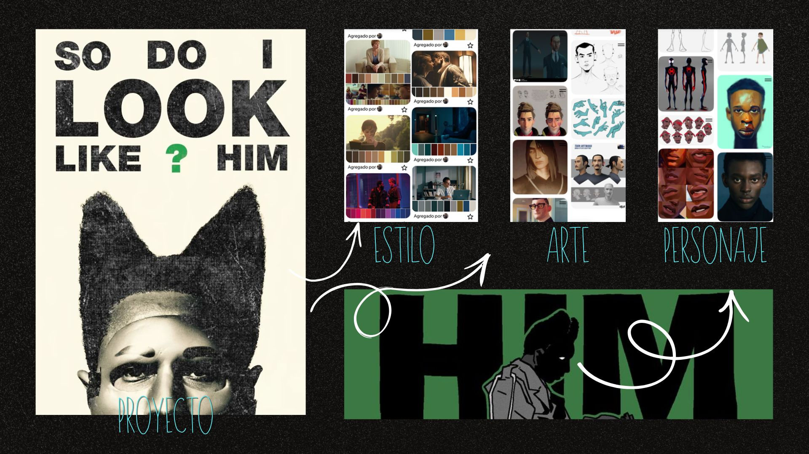
IDEACIÓN
Durante la fase de ideación se definió una estética visual enfocada en transmitir la carga emocional e introspectiva del proyecto, optando por un estilo que equilibra lo simbólico con lo expresivo.
Las decisiones artísticas se centraron en el uso intencional del color, la iluminación y las formas para representar estados internos del personaje, así como en la simplificación y estilización de elementos para dirigir la atención hacia la narrativa.
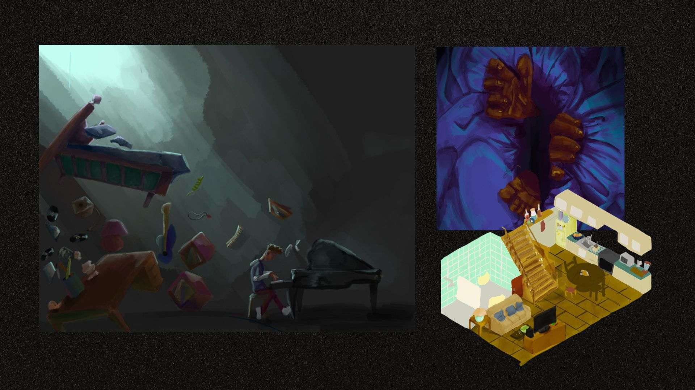
DESARROLLO VISUAL
Durante la fase de desarrollo visual se definió una estética enfocada en transmitir la carga emocional e introspectiva del proyecto, optando por un estilo que equilibra lo simbólico con lo expresivo.
Las decisiones artísticas se centraron en el uso intencional del color, la iluminación y las formas para representar estados internos del personaje, combinando creatividad y técnica.
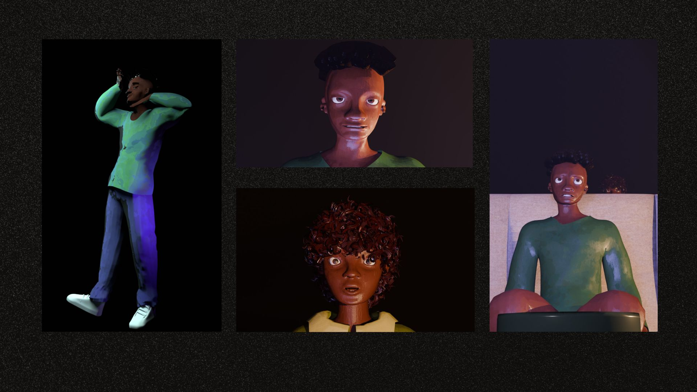
AJUSTES
Durante la fase de producción se presentaron diversos desafíos, principalmente relacionados con la gestión del tiempo y las limitaciones del equipo de renderizado disponible. Estas condiciones implicaron optimizar procesos y priorizar escenas clave.
A partir de ello, se adaptó el flujo de trabajo para mantener la calidad visual dentro de los tiempos establecidos, resolviendo problemas técnicos de manera eficiente y fortaleciendo la capacidad de toma de decisiones bajo restricciones reales de producción.
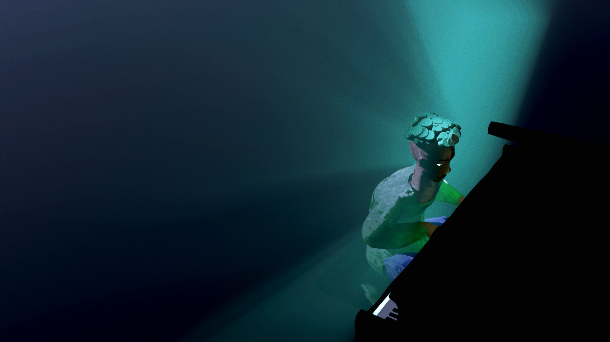
RESULTADO FINAL
El resultado final del proyecto es una pieza animada que integra de manera coherente los elementos narrativos, visuales y técnicos desarrollados a lo largo del proceso.
A pesar de las limitaciones enfrentadas, se logró una propuesta que comunica eficazmente la intención emocional y conceptual planteada desde el inicio, destacando el uso del movimiento, la composición y la estética para reforzar la narrativa.
ESCENA NOCTURNA
Modelado y Animación 3D
Proyecto de modelado de entorno urbano nocturno con iluminación atmosférica, explorando técnicas de texturizado y composición de escena.
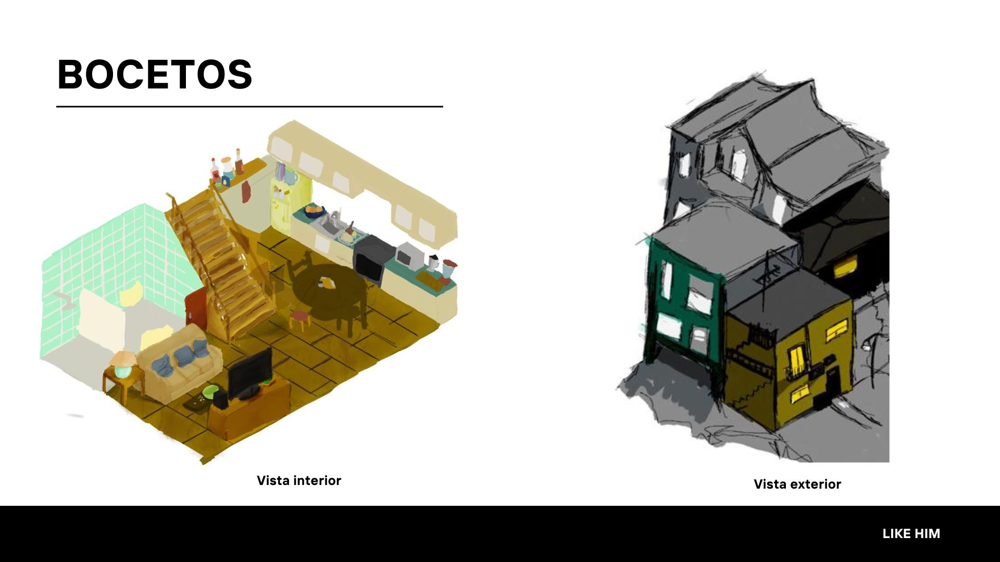
IDEACIÓN
El proyecto surge a partir de la intención de traducir el lenguaje musical a una experiencia visual. Tomamos como punto de partida la canción Like Him, buscando capturar su tono melancólico, introspectivo y emocional.
Iniciamos el proceso recopilando referencias visuales y conceptuales, lo que nos permitió establecer una base sólida para la narrativa y la ambientación
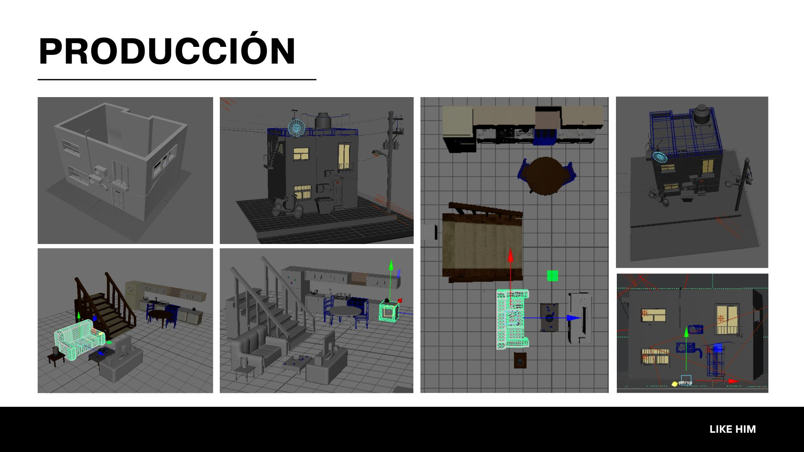
DESARROLLO VISUAL
Se estableció una dirección estética basada en el trasfondo narrativo y en la construcción del personaje, asegurando que cada decisión visual respondiera a su contexto emocional y social.
La propuesta visual se inspira en los barrios populares de Nueva York, particularmente en aquellos donde convergen influencias de comunidades latinas y afroamericanas. Esta fusión cultural no solo define el entorno, sino que también da origen a la identidad del personaje, reflejando una mezcla de raíces, códigos visuales y dinámicas sociales propias de estos espacios.
A partir de esta base sociocultural, se construyó el perfil del personaje: un individuo de clase media-baja, marcado por la ausencia de la figura paterna y una relación distante con su madre. Estos elementos influyen directamente en la narrativa visual, guiando decisiones como la ambientación, la iluminación y el lenguaje corporal, con el objetivo de transmitir su estado emocional y su historia de manera sutil pero contundente.
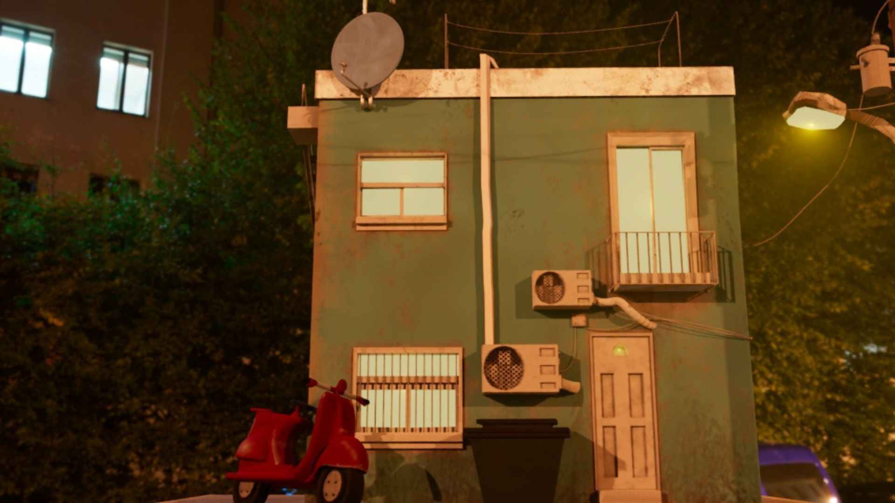
AJUSTES
Durante esta etapa se desarrollaron los procesos de modelado, texturizado y layout, consolidando los elementos principales de la escena. Sin embargo, al integrar los componentes en la composición final (particularmente en los exteriores) se detectaron inconsistencias en la iluminación y en la proyección de sombras, las cuales resultaban poco convincentes y no lograban comunicar la atmósfera deseada.
Se realizaron ajustes en parámetros como el Ambient Occlusion y se llevaron a cabo pruebas de render dentro de Autodesk Maya; no obstante, estos cambios no fueron suficientes para alcanzar el nivel de definición y profundidad visual buscado.
Este análisis permitió identificar la necesidad de replantear la estrategia de iluminación y renderizado, orientando el proceso hacia soluciones más precisas que reforzaran la intención narrativa del proyecto.
RESULTADO FINAL
La pieza final integra modelado, texturizado e iluminación en una composición visualmente impactante y coherente con el concepto inicial.
El resultado refleja el dominio técnico y la visión artística desarrollada a lo largo de todo el proceso de producción.
Caramelon
Modelado y Animación 3D
Desarrollo completo de una animación 3D para un corto infantil. Se llevó el proceso de modelado, texturizado, rigging y animación
IDEACIÓN
El proyecto nace a partir de la creación de una serie animada titulada “Somos Monstruos”, enfocada en explorar cómo los niños experimentan, interpretan y procesan distintas problemáticas de la vida cotidiana.
La propuesta se construye a partir de metáforas visuales simples, donde los “monstruos” representan emociones, hábitos o conflictos internos. A través de este enfoque, la serie busca traducir experiencias complejas en un lenguaje accesible tanto para niños como para un público general, permitiendo una mejor comprensión del mundo emocional infantil.
El objetivo principal es generar empatía y reflexión, mostrando cómo situaciones aparentemente pequeñas pueden tener un impacto profundo en el desarrollo emocional de un niño.
DESARROLLO VISUAL
Dentro de este universo se desarrollaron dos figuras centrales:
Michael, un niño que encuentra refugio emocional en el consumo de dulces como mecanismo de evasión.
Caramelón, la manifestación monstruosa de este hábito, representando las consecuencias físicas y emocionales de su conducta.
AJUSTES
Durante la producción se identificó una discrepancia entre la intención visual del proyecto y el resultado técnico inicial:
El problema fue el uso de shaders base generaba un acabado demasiado realista, alejándose del estilo caricaturesco buscado
Como solución se desarrollaron shaders personalizados mediante nodos, permitiendo un acabado más plano, estilizado y acorde a la dirección artística
RESULTADO FINAL
El resultado final es una propuesta narrativa que combina diseño de personaje, simbolismo y animación para abordar temas relevantes en la infancia.
El proyecto logra generar impacto a través de una historia accesible y visualmente atractiva, transmitiendo un mensaje sobre la relación con la alimentación y las dinámicas dentro del núcleo familiar.
PERSONAJE COSTERO
Diseño Conceptual
Creación de personaje principal para universo narrativo original, desarrollando su historia, cultura y contexto visual único.
IDEACIÓN
El personaje debía construirse sobre cuatro conceptos base: principal, valiente, amable y confiable. Cada uno implica lecturas visuales distintas, por lo que el reto fue encontrar el lenguaje de formas que los integrara con coherencia en un solo diseño.
Las culturas polinesias y la ballena funcionaron como marco de referencia no decorativo sino narrativo: sus patrones geométricos, tatuajes de carga simbólica y paleta orgánica —mar, tierra, cielo— se incorporaron como parte de la identidad del personaje, dándole contexto dentro del mundo que habita.
DESARROLLO VISUAL
Con la dirección cultural definida, el diseño se construyó pensando en el movimiento. Para animación 2D, la eficiencia de las formas es tan importante como su expresividad: cada línea tiene una consecuencia técnica.
Se eliminaron accesorios secundarios, texturas ornamentales y detalles decorativos que dificultaban los ciclos de movimiento, conservando con cuidado los marcadores culturales que anclan la identidad polinesia. El resultado es un personaje más limpio y ágil, sin perder autenticidad.
AJUSTES
Con el diseño base establecido, comenzó el proceso de simplificación para el formato de animación. Simplificar no es empobrecer: es decidir qué elementos son esenciales para la identidad del personaje y cuáles generan ruido en el contexto animado.
Los ajustes finales aseguraron que el diseño comunicara efectivamente la personalidad y el rol del personaje en la narrativa.
RESULTADO FINAL
El personaje resultante es funcional para animación 2D e ideal para el worldbuilding al que pertenece. Cumple los cuatro conceptos originales de forma coherente, está preparado técnicamente para ser animado con eficiencia, y se integra de manera genuina al universo construido a partir de las culturas polinesias.
Revista Render
Diseño Conceptual
RENDER es una revista enfocada en la industria de la animación, pensada para el público mexicano. Su contenido abarca reportajes de fondo, noticias de la industria y secciones de making off que muestran el proceso detrás de las producciones animadas más relevantes. El objetivo era crear una publicación que tratara la animación con la seriedad editorial que merece: como industria, como arte y como cultura.
IDEACIÓN
El punto de partida fue definir la identidad de la revista: ¿a quién le habla, de qué habla y cómo lo dice? RENDER se dirige a un público mexicano interesado en la animación, ya sea desde la práctica profesional, la formación o la pasión por el medio. Eso implicaba un tono que combinara rigor editorial con accesibilidad, sin caer ni en lo académico ni en lo superficial.
Se definió la arquitectura de contenidos en cuatro secciones: Toon News para noticias y novedades de la industria, Industria para análisis y contexto del sector, Así Se Hizo para los making off y procesos de producción, y Toon+ para contenido de cultura animada más ligero y de referencia.
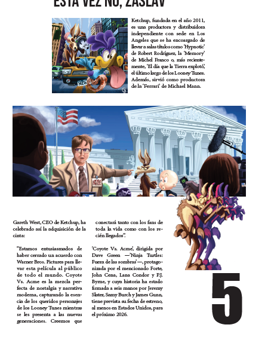
DESARROLLO VISUAL
El diseño visual de RENDER buscaba reflejar el mundo al que se dirige: una revista sobre animación debe tener personalidad gráfica, no solo estructura funcional. Se trabajó con tipografía display de peso fuerte para los encabezados, generando un carácter editorial contundente, y se estableció una paleta contenida centrada en el verde oscuro como color institucional, complementada con blancos y negros para los interiores.
La maqueta se construyó sobre una retícula flexible que permite convivir texto, imagen y elementos gráficos grandes sin perder legibilidad. Cada sección tiene una presentación visual propia que la diferencia dentro de la misma publicación, manteniendo coherencia en el sistema general.
AJUSTES
Durante el desarrollo se afinaron las decisiones tipográficas y de composición para que la revista funcionara tanto en páginas muy visuales —como las de portada de sección y making off— como en páginas de texto denso, que requieren mayor estructura y ritmo de lectura.
Se ajustaron jerarquías de texto, márgenes y el tratamiento de imágenes para lograr consistencia a lo largo de los 16 páginas. También se revisó el tono editorial de cada sección para asegurar que el cambio de voz entre noticias, análisis e historias de producción fuera natural y legible para el lector.
RESULTADO FINAL
El resultado es una revista funcional y con identidad propia, que cubre distintos ángulos de la industria de la animación desde una perspectiva mexicana. RENDER demuestra que es posible hacer periodismo especializado en animación con criterio editorial, diseño cuidado y contenido de valor, dirigido a una audiencia que raramente encuentra publicaciones pensadas para ella.
Museo Virtual
Diseño Conceptual
Line of Fear es una experiencia virtual de museo que nace del amor al terror como género, como estética y como fenómeno cultural. A través de una serie de piezas de ilustración digital, el proyecto explora el horror —clásico y contemporáneo— no como algo que se consume pasivamente, sino como un espejo de las inquietudes colectivas de cada época.
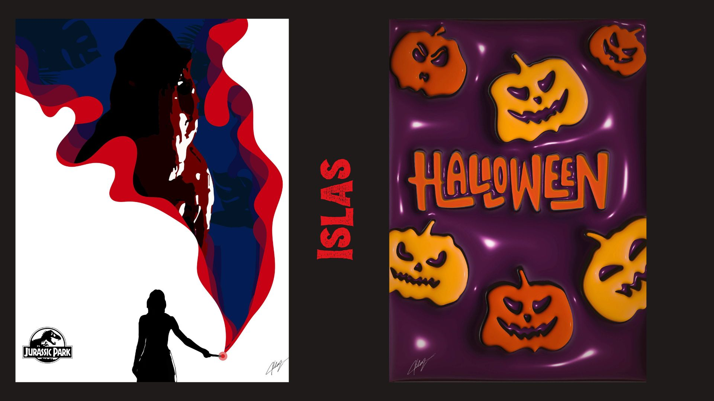
IDEACIÓN
El proyecto surge de una pregunta personal: ¿qué dice el terror sobre nosotros? No como género de sustos, sino como lenguaje que refleja miedos sociales reales. Esa pregunta dio forma a una serie en la que cada pieza parte de una obra —El extraño mundo de Jack, Rocky Horror, Jurassic Park, y la reinterpreta visualmente desde una técnica vectorial específica.
La intención no era ilustrar películas sino destilar su esencia simbólica: qué representa cada monstruo, qué miedo cultural encarna, qué sigue siendo vigente. El hilo conductor es la línea —limpia, directa, vectorial— como herramienta para hablar de lo oscuro sin abandonar la claridad formal.
DESARROLLO VISUAL
Cada pieza de la serie responde a una técnica diferente —espiral tipográfico, distorsión, fusión, deformación libre, islas, 3D— lo que convierte el proyecto en un laboratorio técnico además de un ejercicio conceptual. La restricción de trabajar con líneas simples y colores planos no limita la expresividad; la concentra.
El universo visual de Line of Fear oscila entre lo festivo y lo perturbador, entre lo clásico y lo contemporáneo, entre el humor negro y la emoción genuina. Esa tensión es intencional: el terror más interesante no es el que asusta de manera directa, sino el que incomoda, sorprende o conmueve desde un ángulo inesperado.
AJUSTES
A lo largo del desarrollo se fue definiendo qué obras merecían un tratamiento más conceptual y cuáles eran exploraciones técnicas puras. Las piezas más sólidas son aquellas donde la técnica y el concepto se refuerzan mutuamente: la distorsión en F.O.G. que hace eco de la deformación del tiempo, la espiral tipográfica que envuelve al espectador como la canción misma, o el humor de Terror real donde los miedos reales de la adultez eclipsan al horror sobrenatural.
Este proceso ayudó a afinar el criterio curatorial de la experiencia: no todas las piezas tienen el mismo peso narrativo, y reconocer eso es parte del resultado.
RESULTADO FINAL
Line of Fear es un museo virtual que funciona como autorretrato cultural: habla de las obras que han marcado una mirada, de las técnicas que se dominan y del terror como lenguaje que merece tomarse en serio. El resultado es una experiencia que mezcla referencias clásicas con reinterpretaciones contemporáneas, demostrando que el horror tiene tanto que decir sobre la humanidad como cualquier otro género.
Colitas Contentas es una empresa real de cuidado de mascotas que ofrece paseos, hotel, guardería, grooming y adiestramiento. El proyecto nació de la necesidad de darle una identidad visual coherente a un negocio propio: construir desde cero una marca que comunicara calidez, confianza y profesionalismo, sin perder el tono cercano y afectivo que define al servicio.
IDEACIÓN
El punto de partida fue entender qué tipo de vínculo tiene la marca con sus clientes. Colitas Contentas no vende un servicio frío de logística; vende tranquilidad y amor hacia las mascotas. Eso implicaba una identidad que se sintiera cálida y accesible, pero con suficiente solidez para proyectar confianza profesional.
Se definieron la misión, visión, valores y filosofía de la empresa como base conceptual antes de tomar cualquier decisión visual. El nombre mismo —colitas contentas— ya apuntaba hacia una paleta, un tono tipográfico y un registro emocional específico: alegría, movimiento y afecto.
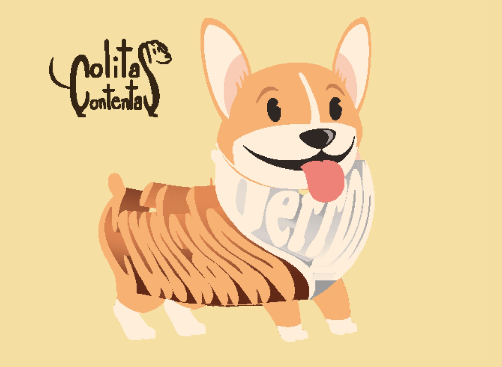
DESARROLLO VISUAL
El logotipo integra tipografía y figura de manera orgánica: las letras construyen la silueta de un perro, de modo que forma y contenido son inseparables. Se definió una paleta contenida en amarillo dorado, café oscuro y crema, con suficiente contraste para funcionar en positivo, negativo y distintos fondos.
El sistema de identidad se desarrolló pensando en todos los puntos de contacto de la marca: desde formatos pequeños como tarjetas y flyers hasta aplicaciones de gran formato como espectaculares y vallas publicitarias. Cada pieza mantiene coherencia tipográfica —Gill Sans MT Condensed y Myriad Pro— y respeta las reglas de uso del logotipo establecidas en el manual corporativo.
AJUSTES
Durante el proceso se afinaron las restricciones de uso del logotipo para garantizar su legibilidad en cualquier contexto: se establecieron tamaños mínimo (1 cm) y máximo (5 m), los fondos permitidos y prohibidos, y las variaciones cromáticas válidas. Esto aseguró que la identidad funcionara tanto en un parabús nocturno como en un flyer de mano.
En paralelo, se desarrolló una campaña de contenido para redes sociales con tono desenfadado y copywriting propio de la marca —"¿Listo pa' pasear?", "El tamaño no importa"— que tradujo la identidad visual al lenguaje digital sin perder personalidad.
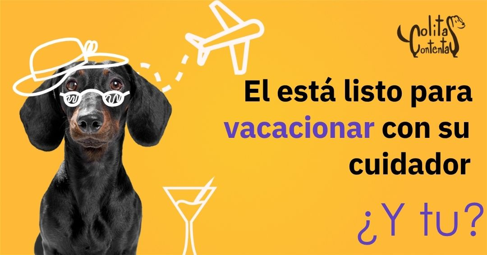
RESULTADO FINAL
El resultado es un sistema de identidad completo que cubre desde el manual de marca hasta la presencia digital y los materiales impresos. Colitas Contentas tiene una voz, una cara y un carácter propios, capaces de competir con marcas establecidas del sector y de crecer con la empresa. El proyecto demuestra que un negocio real, por pequeño que sea, merece y se beneficia de un diseño pensado con la misma seriedad que cualquier cliente de agencia.
En mis Patitas
Branding y Diseño
En mis patitas es un proyecto de identidad visual para un veneto con el mismo nombre, un espacio pensado para reunir a personas y mascotas a través de actividades que fomentaran la adopción responsable. El reto fue construir una marca que se sintiera acogedora y emotiva, capaz de conectar con el público desde el afecto — y el personaje de Eli fue el corazón desde el que se construyó todo lo demás.
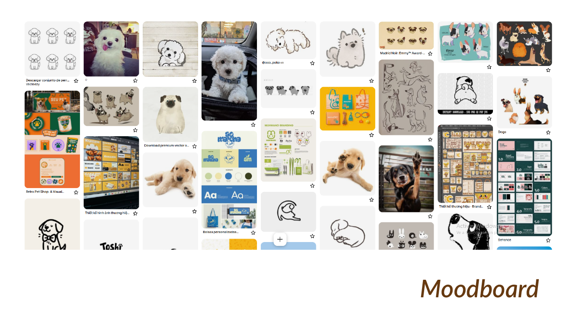
IDEACIÓN
El concepto de la marca parte de un lugar muy específico: el perro callejero mexicano. Esa figura blanca, de pelaje esponjoso y presencia inconfundible en las calles, carga consigo décadas de historias no contadas — perros que esperan, perros que acompañan, perros que buscan un hogar. Eli nace de ese imaginario. No es un perro genérico ni una mascota decorativa: es la síntesis visual de todos esos perritos que el proyecto quiere visibilizar y dar en adopción.
Antes de definir tipografía, paleta o composición, la pregunta fue quién es Eli y qué representa. Esa pregunta guió todas las decisiones de diseño posteriores.
DESARROLLO VISUAL
Eli se diseñó con formas simples, redondeadas y expresivas — silueta esponjosa, orejas caídas, mirada curiosa — capturando la esencia del perro criollo callejero sin caricaturizarlo. La clave fue encontrar el nivel de abstracción justo: suficientemente ilustrado para tener carácter y ternura, suficientemente limpio para funcionar como pieza gráfica dentro del logotipo.
Su rol dentro del sistema de identidad va más allá del ícono: Eli es la mascota oficial de la marca, el personaje que le da nombre a las historias reales de los perritos que el veneto acerca al público. Cada animal que pasa por En mis patitas tiene una historia, y Eli es quien las representa a todas.
El logotipo se construyó alrededor de él — tipografía orgánica, paleta en café oscuro y blanco, patrón de fondo con huellas y huesos — generando un sistema donde Eli no decora la marca sino que la ancla.
AJUSTES
Se desarrollaron tres presentaciones del logotipo —horizontal, vertical y reducción— probando en cada una que Eli mantuviera presencia y legibilidad sin perder su carácter. En la versión de reducción, donde la ilustración se minimiza al máximo, la silueta del perro sigue siendo reconocible: ese fue el criterio de validación del diseño.
También se trabajó el equilibrio entre la figura de Eli y el texto para que en ninguna presentación uno dominara al otro, sino que funcionaran como una unidad con peso visual propio.
RESULTADO FINAL
El resultado es una identidad que tiene alma precisamente porque tiene un personaje real detrás. Eli no es un recurso gráfico — es un argumento: la razón por la que la marca existe, hecha ilustración. En mis patitas construye su identidad desde la historia del perro callejero mexicano, transformando algo cotidiano e ignorado en el símbolo de un proyecto de adopción con propósito y corazón.
Ruta de Rueda
Branding y Diseño
Ruta de Rueda es una empresa de tours por carretera que ofrece experiencias de viaje personalizadas a través de la República Mexicana en camioneta. El proyecto nació de una historia familiar real: convertir décadas de conocimiento en carretera en un servicio turístico auténtico, seguro y memorable para quienes quieren descubrir México desde adentro.
IDEACIÓN
El punto de partida fue una historia de reinvención. Omar Monroy pasó años recorriendo México de norte a sur transportando mercancías en tráiler, acumulando un conocimiento profundo de rutas, paradas y geografía que muy pocos tienen. Cuando ese negocio cerró, ese conocimiento no desapareció — se transformó.
Ese saber de carretera se reconvirtió en una propuesta de valor turística: no solo llevar a personas de un punto a otro, sino construir experiencias que conecten a los viajeros con la riqueza cultural, natural y gastronómica de México. Esa narrativa de origen — el trailero que se convierte en guía — fue el concepto central desde el que se desarrolló todo el proyecto.
DESARROLLO VISUAL
El proyecto se estructuró como una propuesta de negocio completa. Se definieron la misión, visión y valores de la empresa, así como el diseño general del servicio: vehículos tipo van equipados con comodidad, conductores capacitados en seguridad y primeros auxilios, e itinerarios que incluyen pueblos mágicos, sitios históricos, reservas naturales y paradas gastronómicas.
Se diseñó también el flujo completo de la experiencia del usuario en cuatro etapas — planificación y reserva, el día del viaje, experiencia en los destinos y fin del tour — garantizando que cada punto de contacto con el cliente tuviera coherencia y calidad.
AJUSTES
Durante el desarrollo se realizó un análisis de ventajas y desventajas del modelo de negocio. Se identificaron como fortalezas el conocimiento real de carretera, la capacidad de personalización y el enfoque en turismo cultural auténtico. Como retos principales: los altos costos operativos de mantenimiento vehicular, la estacionalidad del turismo y la necesidad de diferenciarse en un mercado competido.
Ese análisis honesto permitió afinar la propuesta de valor y definir qué hace a Ruta de Rueda distinta: no es una agencia de viajes convencional, sino una experiencia conducida por alguien que conoce las carreteras mexicanas como su propia casa.
RESULTADO FINAL
El resultado es un proyecto de empresa con base real, construido desde una historia genuina y desarrollado con rigor metodológico. Ruta de Rueda demuestra que el diseño no solo se aplica a lo visual: también sirve para estructurar ideas, comunicar propuestas de valor y darle forma a un negocio con propósito. El proyecto conecta experiencia familiar, conocimiento del territorio y vocación por mostrar lo mejor de México.
DEMO REELS
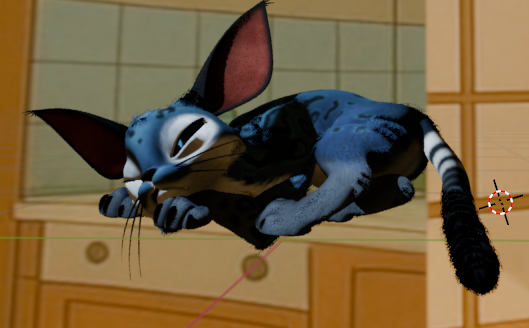
Este demo reel reúne una selección de mis trabajos más representativos en animación del último año, reflejando mi desarrollo técnico y creativo en distintas áreas del medio. A través de estas piezas, exploro el movimiento, la narrativa y la construcción visual, mostrando mi enfoque en la creación de contenido dinámico, coherente y con intención estética.
MODELADO Y ANIMACIÓN 3D
Este demo reel reúne una selección de mis trabajos en modelado y animación 3D, donde exploro la creación de personajes, objetos y entornos digitales. A través de estas piezas, presento mi proceso desde la construcción de formas y texturas hasta la integración del movimiento.
Año 2025
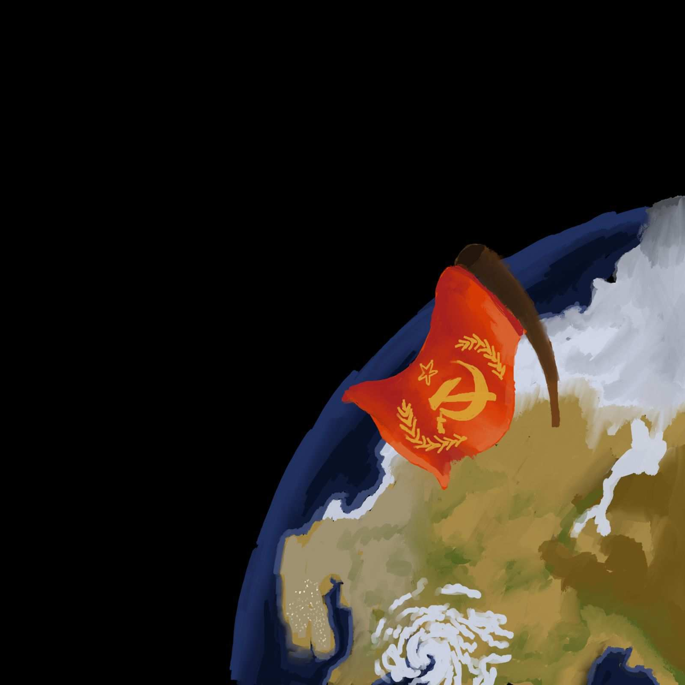
SERVICIOS
En esta sección presento los servicios que ofrezco, enfocados en la creación de soluciones visuales y experiencias integrales que combinan creatividad, estrategia y narrativa. Mi trabajo abarca distintas áreas del diseño y la producción digital, desde la construcción de identidades de marca hasta el desarrollo de experiencias interactivas y universos narrativos.
MODELADO Y ANIMACIÓN 3D
Creo piezas tridimensionales que combinan forma, textura y movimiento, dando vida a conceptos a través de animaciones dinámicas y visualmente atractivas.
BRANDING Y DISEÑO
Desarrollo identidades visuales estratégicas que reflejan la esencia de cada marca, creando sistemas gráficos coherentes, memorables y adaptables a distintos medios.
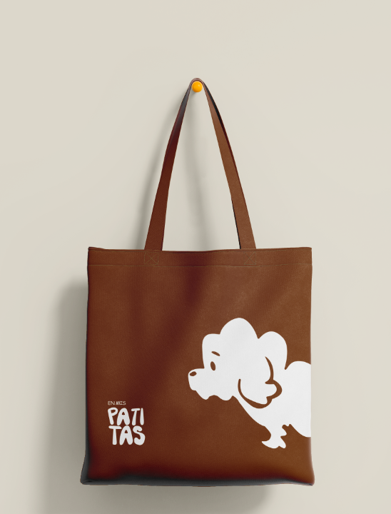
DISEÑO CONCEPTUAL
Construyo universos conceptuales con identidad, historia y coherencia interna, desarrollando personajes y contextos que enriquecen la narrativa y generan conexión emocional.
DISEÑO UX Y UI
Diseño experiencias digitales intuitivas y funcionales, centradas en el usuario, que facilitan la interacción y mejoran la comunicación entre la marca y su audiencia.
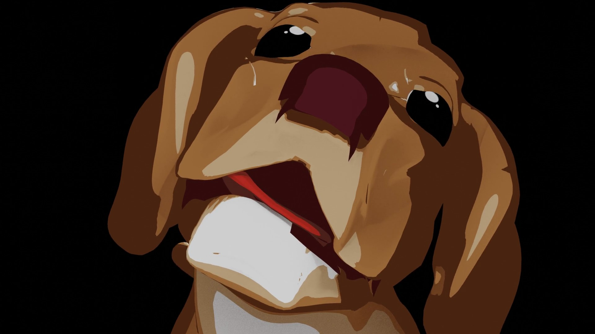
CONSTRUYAMOS TU PRÓXIMO PROYECTO
Gracias por tu tiempo. Si tienes una idea en mente o quieres colaborar, no dudes en contactarme. Estaré encantado de trabajar juntos y dar vida a nuevos proyectos.